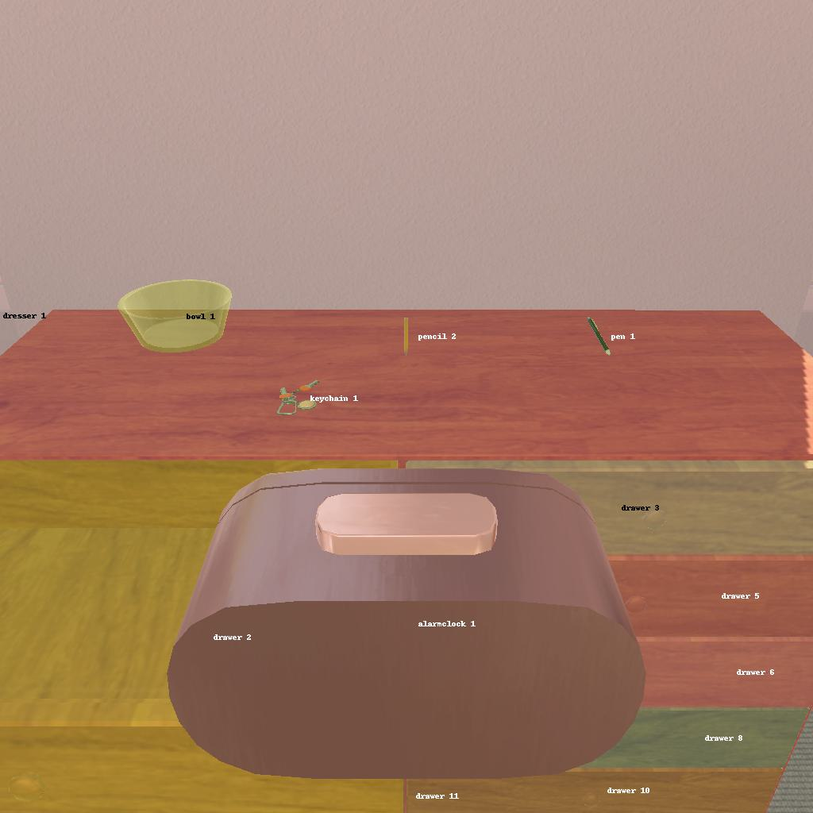
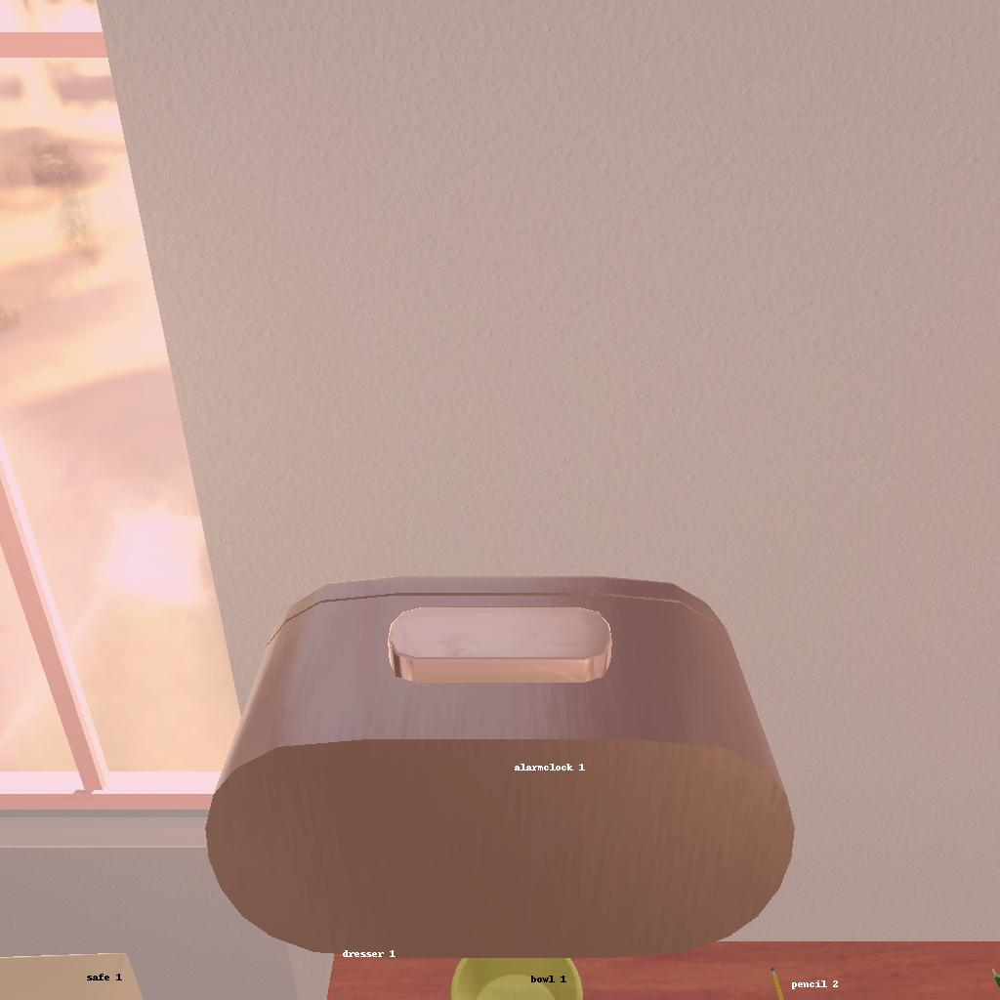
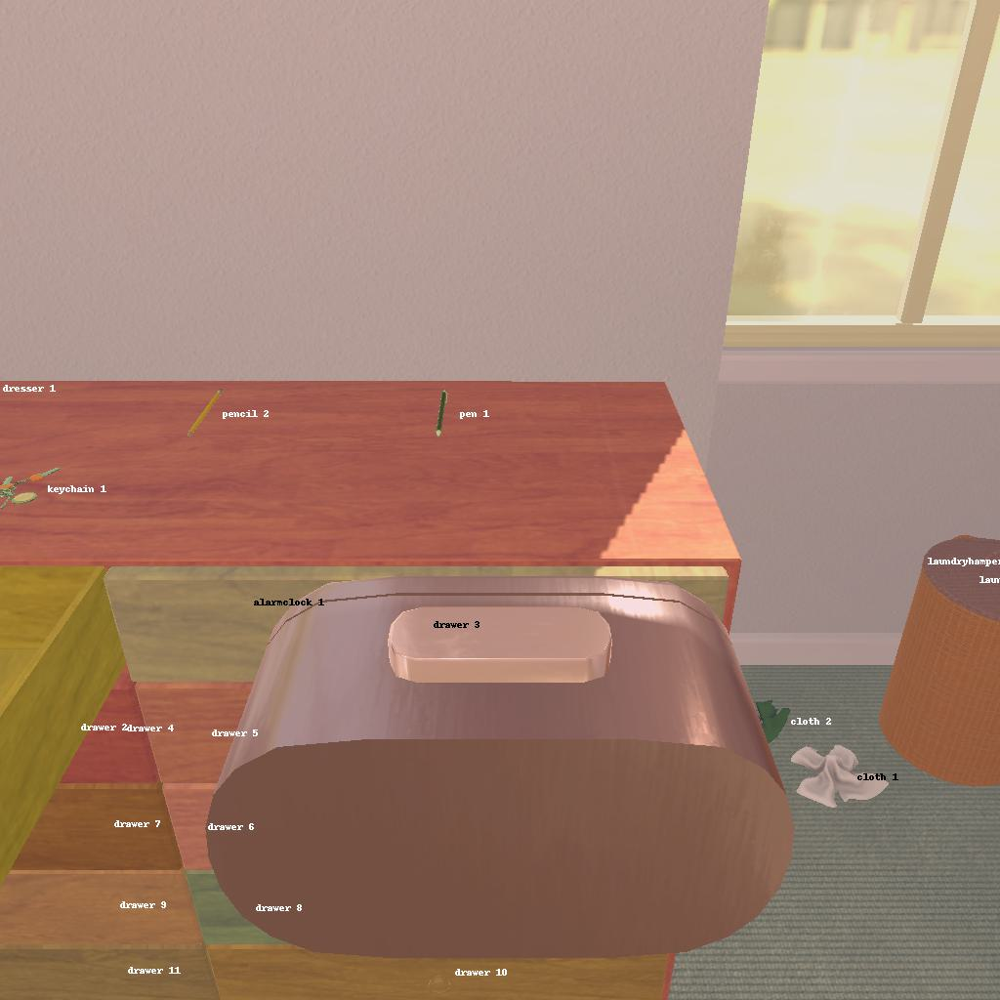

---------------------------------------------------------task: 0---------------------------------------------------------
--------------------------------------------------------------------------------------------------------------------------------------------------------------------
--------------------------------------------------------------------------------------------------------------------------------------------------------------------
Step:--------------------------------------------------------------------------13-------------------------------------------------------------------------------
----------------------------------------
VLM Prompt:
Image1:
Image2:
Image3:
**Instruction**
1. Analyze the provided image to identify all visible household objects, focusing on those relevant to the task description "examine the alarmclock with the desklamp."
2. Use the analysis of the image and the task hint "The agent must find an object of the desired type, locate and turn on a light source with the desired object in-hand." to answer the question: what is the most reasonable action in the choices for the task description "examine the alarmclock with the desklamp"?
4. Decide and write the answer using the template: The answer is: (i): , where i is the real number. If there is no desired object in the image, search every place based on **Initial Observation** to find the object. And if no one is exactly correct, choose a similar answer.
**Initial Observation**
You are in the middle of a room. Looking quickly around you, you can see bed (1), sidetable (1), drawer (1-11), dresser (1), safe (1), laundryhamper (1), garbagecan (1)
**Answer Choices**
(1): go to bed 1
(2): go to sidetable 1
(3): go to drawer 1
(4): go to drawer 2
(5): go to drawer 4
(6): go to drawer 5
(7): go to drawer 6
(8): go to drawer 7
(9): go to drawer 8
(10): go to drawer 9
(11): go to drawer 10
(12): go to drawer 11
(13): go to safe 1
(14): go to laundryhamper 1
(15): go to garbagecan 1
(16): open drawer 3
(17): close drawer 3
(18): put alarmclock 1 in/on drawer 3
(19): examine alarmclock 1
(20): examine drawer 3
**Answer**
Let's think step by step by following the instructions.
----------------------------------------
----------------------------------------
Original Response:
The task is to examine the alarmclock with the desklamp. From the initial observation, we can deduce that we are in a bedroom with various furniture items. In Image 1, we can see the alarmclock labeled as "alarmclock 1" on top of "drawer 3." However, we do not see a desklamp in any of the images provided.
The task hint suggests that we need to find a light source and turn it on while holding the desired object (the alarmclock). Since we cannot see a desklamp in the images, we must search the room based on the initial observation to find it.
Considering the options provided:
- Options (1) to (15) are about going to different objects in the room, which does not directly help with the task of examining the alarmclock with a desklamp.
- Option (16) is to open drawer 3, but we can already see the alarmclock on top of it, so there's no need to open it.
- Option (17) is to close drawer 3, which is irrelevant because the alarmclock is not inside the drawer.
- Option (18) is to put the alarmclock in/on drawer 3, but it's already on top of it.
- Option (19) is to examine the alarmclock, but the task requires examining it with the desklamp, which we have not located yet.
- Option (20) is to examine drawer 3, which is not the current task.
Since the desklamp is not visible in the images, we need to search the room. The most reasonable action from the choices would be to go to the sidetable, as traditionally, a desklamp might be placed on a sidetable next to the bed in a bedroom. Therefore, the chosen action should be to go to the sidetable to look for the desklamp.
The answer is: (2): go to sidetable 1.
----------------------------------------
----------------------------------------
>>> Refine Original VLM Response and Get Pure Action: go to sidetable 1
----------------------------------------
-----------------------------------------------------------------
Running time: 17.87227177619934 seconds
Total Money: 0.47705
-----------------------------------------------------------------
-----------------------------------------------------------------
Text Observation:You arrive at loc 1. On the sidetable 1, you see a pillow 1, a desklamp 1, and a cellphone 1.
-----------------------------------------------------------------
UNSUCCEED